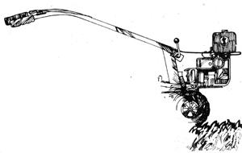
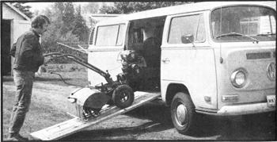

Four years ago we bought a Troy-Bilt rototiller to work our seven-acre homestead in Missouri. When we then sold the place and moved to a couple of nice rock-free acres in New Hampshire, the Troy-Bilt went with us. Later still, in the summer of 1973 (about the time we decided to sell out once more and join an effort to set up an alternative community), I began to do some tilling for other people on the side.
My intention when establishing the tilling enterprise was two fold: [A] to beef up our savings account with some extra money and [B] to test the service as a possible homestead or community business.
The first objective (not necessarily the more important) was realized well beyond my fondest expectations. The second was also realized but hasn't been fully tested at the time this article is being written. Meanwhile-for those anxious to begin such a business right now-here are the pointers I've picked up to date.
THE TOOLS OF THE TRADE
First of all, you'll need some basic equipment:
[1] A rototiller, and 1 won't hedge on what kind: a TroyBilt, naturally. Thirty-five percent of my work has been on unbroken land, and you just can't put in a new garden with any machine less than a tractor-plow and harrow or a tractor with a tiller mounted on a three-point hitch and hooked up to a 'power take-off or a rototiller with rear-mounted tines. (I've also found the Troy-Bilt ideal on small jobs where a tractor-even a little bitty one-would have been inappropriate.)
[2] A vehicle for transporting the tiller. I used our Volkswagen bus with an old door for a loading ramp.
[3] A telephone, and someone to answer it during specified hours. This is crucial to the success of the advertising you're about to arrange.
HOW TO ADVERTISE YOUR SERVICE
Place an ad in the classified section of the local paper. And don't just call in the message go down and talk to the folks at the office. Run the notice continuously-it's less expensive that way-and have the first line set in CAPS. It might also be a good idea to pay extra for position. I noted a strong correlation between where my insertion appeared (at the top, middle, or end of a column) and the number of calls I received that day. The top of a column of type is by far the best, but the bottom of the page is OK if your section happens to start there.
Our paper seemed to be rotating the positions of the ads, and mine fell into an unfavorable spot in the order and appeared first on Monday and last on Saturday. Also, the CAPS 1'd requested somehow got left off. I was already getting as many calls as I wanted, though, so I let the message run as it was.
Other advertising possibilities are handbills, notes on supermarket bulletin boards, and a sign on your vehicle. Give the county agricultural agent your name and telephone number and ask greenhouse operators to post your notices. In all your publicity, mention the hours when orders will be taken and be sure that someone will be waiting by the phone during the periods specified.
If a person other than the tiller operator is answering the calls, he or she should note the customer's name, address (with directions, if appropriate), and telephone number. The assistant should then ask some questions: How big is the garden 20' X 30'; 30' X 30', or whatever? Has it been tilled regularly, or is it new? In the latter case, is the ground covered with quack grass or Bermuda grass (both extremely difficult to work)? Is the soil loamy sand, clay, or what? Are there a lot of rocks?
The answers to these questions are the basis for your estimate. In our area the following rates have proven acceptable:
FIRST CATEGORY: established garden plots, under 600 square feet and nearby (within three or four miles), $5.00. The charge can go as high as $10.00 if the trip meant 10 to 12 miles of one-way travel. Sometimes, if I have several jobs in the same area, I'll give all the customers a discount (down to an average of $7.00 each). I even encourage people to ask their friends and neighbors whether they'd like their gardens tilled.
SECOND CATEGORY: over 600 but under 1,000 square feet, a minimum of $10.00. Most gardens of this size tend toward the high end of the square footage limits . - . and when they don't, the owners always want me to enlarge their plots a foot or two on either end. (Oddly enough, people never mention this until you've unloaded your machine and started to work.)
THIRD CATEGORY: 1,000 to 1,500 square feet, $10.00 or $15.00 with the, average $12.00 or 1,500 to 2,500 square feet, $15.00 to $20.00. 1 doubt that you'll get a job larger than that, simply because anyone with a plot bigger than Z500 square feet is a garden freak and probably has his own tractor, tiller or what have you. You'll notice that my charges for previously tilled gardens work out to about $1.00 per hundred square feet, with room to bargain. When the plots run this size, though, it's a good idea to adjust the rates and give the owners a break.
FOURTH CATEGORY: new ground or turf. This is the difficult one. Your estimate will probably miss by the proverbial country mile. At any rate, you're bound to win a few and lose a few.
You won't normally get any jobs of this kind under 600 square feet. Most people start their gardens big and end small. In my area the average new plot runs between 900 and 1,500 square feet, and I charge $15.00 to $20.00 even as high as $25.00.
These rates are on the low side for the work involved. I often have to bring my power mower and a good rake (two other very useful pieces of equipment, but not strictly essential) to clear off a plot in this category before the tiller can work efficiently. Many times three passes are needed, and that can mean coming back a week or so after the first two to make the third. This is necessary because the organic matter covering the sod keeps the soil from drying properly after the spring thaw. When this material is plowed in, a week of sunshine and air is needed to start the process of decomposition. The third tilling, however, always works like a charm, and the plot looks quite nice afterward.
The fact is, I've taken something of a beating in Category Four. Still, I feel it's worthwhile to do a good job for a fair price so that the owners will want me back next year. And the second time around, of course, such gardens are a snap to till.
Even in this age of rising prices, I can then cut the rate considerably because the plot has moved into the "established" class. Everybody wins!
A few more words at this point about customer relations. In case of rain at the time you've set for a job, call and give an alternate date. Explain that tilling wet soil causes it to clump and destroys its texture. If the owner insists that you do the work at once, tell him to find somebody else who has no qualms about ruining a garden. Remember, we're supposed to be friends of the earth!
On the other hand, don't criticize an owner's methods of gardening. Listen to his or her point of view and learn something if you can. In the right situation you might suggest, for instance, planting pole beans with corn or comment on the lack of organic material in the soil-if that's the case-and recommend that leaves be tilled under in the fall. Quote a reasonable price for this service.
In general, lend support to the customers' food-growing efforts. If you have the time and inclination, you can put together a small packet of gardening literature and offer it to those who want it. You can get this material at your county extension off ice but be selective if you're an advocate of organic methods, because such handouts are often loaded with advice on the use of pesticides, herbicides, and the like. You might write to Rodale Press, Emmaus, Pennsylvania 18049 and ask for 30 or 40 copies of Organic Gardening and Farming for free distribution to your customers.
Another pointer: Always talk to the garden's owner before you start work. Once I didn't do this-because I had arrived early in the morning-and I had already been hard at it for about 20 minutes when the householder came out, looking quite annoyed, and told me to stop. He had been under the impression that I operated a tractor-mounted tiller. "if I'd wanted a crummy 'little machine like that,," he told me, "I'd have rented one and done the job myself. What do I owe you?" Since he refused to examine the tilling I'd already done. I answered, "Nothing". That freaked him out and he stuffed a $5.00 bill in my pocket.
My disgruntled customer was a member of the "bigger is always better" fraternity. This is the same kind of guy who gets nervous when you tell him it's best to wait a week before making the final till on new ground. His response is to get a bigger-no, the biggest-whatever and grind up the earth until it looks like the plot his neighbor has been gardening for 20 years. Humor such folks and seduce them to your methods. Put in extra work and care on their land and give them all the advice you can, for they truly need to be converted.
I assume, though, that you're not going into business just to min people to your ways and you're probably wondering how I've made out financially. First, my costs for the spring 1973 tilling season:
Gasoline $ 5.00
Oil .90
Advertising 23.32
Miscellaneous
(Coke, candy, cigar, etc.) 1.20
TOTAL $30.42
I traveled 591 miles, and-if we use the federal standard deduction of 12d a mile-it cost me $70.92 to operate my vehicle. For those of us who don't buy a new car every two or three years, though, that figure is unrealistic. The truth is probably closer to 64 or 8d a mile.
For a period running from April 17 to May 26, 1 took in $582. 1 kept track of my time, both tilling and traveling, and grossed $10.00 an hour through the season. Using the 12( -a mile deduction, I reckon my net profit to be $450.66 or $8.00 per hour. (if you intend to report your rototilling income, incidentally, you can deduct your telephone bill, depreciation of your equipment and-if you buy your tiller on time - the interest on the payments.)
This result from my first year in operation encouraged me to continue. I decided I'd like to expand my volume by about 25 percent, and made plans to ask all my customers for their repeat business the following season (besides running my ad again).
Before you rush into a similar venture on the basis of my experience, please stop to consider the nature of your own area. In an agricultural community-especially one where there are many part-time farmers-your chances of success might be limited. The following factors, I think, worked in my favor:
[1] This area contains few farms, many mini-farms, and an established gardening population.
[2] The dearth of working farms and part-time farmers also means a shortage of agricultural machinery.
[3] Many of the local residents are older people who need the help I provide.
[4] Members of the younger generation are very busy, with well over 50 percent of the wives working full time. Such couples do not have the extra hours to till, but still want to garden and are glad to pay for my service.
[5] Most of the garden plots don't warrant the owner's investment in a good Troy-Bilt, but are nasty enough to discourage the use of other tillers.
[6] The soils are light and can be worked with only one day of drying out Weather therefore presents no real problem. If you have these or other favorable conditions going for you in your neighborhood, the tilling business is certainly worth a try. I enjoy it myself, and think it could develop into a decent-paying homestead enterprise. At the very least, it's a good way to buy a tiller: Let the Troy-Bilt pay for itself.
|
 |
 |
|